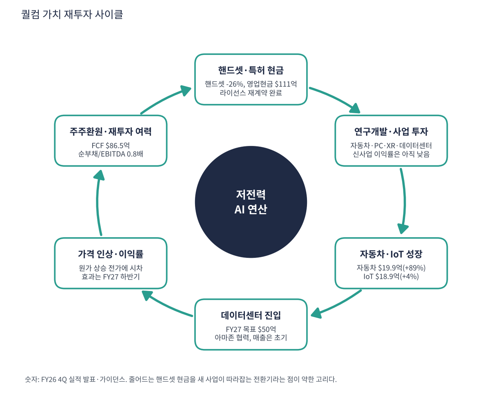

퀄컴은 스마트폰용 프로세서(스냅드래곤)와 모뎀을 만드는 세계 최대 팹리스(설계 전문) 반도체 회사이자, 3G·4G·5G 통신 표준 특허로 휴대폰 1대마다 로열티를 받는 회사다. 특허 수입(QTL)은 매출의 13% 안팎이지만 이익률이 70%를 넘어 칩 사업의 경기 변동을 받쳐 준다. 2021년 이후 자동차·PC·XR·IoT로 넓혔고, 2025년부터 AI 데이터센터에 뛰어들었다.
| 항목 | 내용 |
|---|---|
| 종목 | QUALCOMM Incorporated (QCOM) · NASDAQ · 반도체(팹리스) · 1985년 설립 · 본사 캘리포니아주 샌디에이고 |
| 시가총액 | 약 $1,766억 · GAAP PER 13.0배 · 비GAAP PER 15.7배 (11/6 종가 $165.41, 트레이딩뷰 환산) |
| 최근 분기(FY26 4Q) | 매출 $103.2억(-8%), 반도체(QCT) $90.2억(-8%), 라이선스(QTL) 약 $13억, 비GAAP EPS $2.17(전년 $3.00), GAAP EPS $1.17 |
| 다음 분기 가이던스 | FY27 1Q 매출 $104~112억(전년 $122.5억), 비GAAP EPS $2.15~2.35(전년 약 $3.50) |
| 연간(FY26) | 매출 $431억, GAAP EPS $12.70, 비GAAP EPS $10.54, 영업현금흐름 $111억(전년 $140억) |
| 주요 고객 | 삼성·샤오미·오포·비보 등 안드로이드 제조사, 애플(모뎀 자체 전환 중이나 라이선스는 재계약), 자동차 업체 |
| 다음 실적 | FY27 1Q 실적: 2027년 2월 초 발표 예정 (회계연도는 9월 말 종료) |
| 직책 | 인물 | 역할·특징 |
|---|---|---|
| CEO | 크리스티아노 아몬 | 2021년부터 CEO. 스마트폰 일변도를 벗어나 자동차·PC·IoT·데이터센터로 '핸드셋 외 매출'을 키우는 다각화를 주도 |
| CFO | 아카시 팔키왈라 | 분기 실적 발표에서 원가 상승과 가격 인상 시점을 설명하는 창구 |
경영 스타일: '핸드셋 현금으로 다음 사업을 산다'. 아몬 CEO는 FY27을 "데이터센터 램프를 포함한 핸드셋 외 매출 변곡의 시작"으로 정의하고, 핸드셋 외 매출 +60% 이상과 데이터센터 매출 $50억 목표를 이번에도 재확인했다. 약속이 실적보다 앞서 있다는 점이 이 경영 스타일의 특징이자 약점이다. 한편 위기 관리는 보수적이다. 애플·화웨이·트랜션과 장기 라이선스를 재계약해 현금 기반부터 잠갔다.
스마트폰에서 다진 전력 효율(저전력 NPU·모뎀 통합 SoC)을 PC용 스냅드래곤 X, 자동차용 스냅드래곤 디지털 섀시, XR 안경, AI 추론 가속기로 옮긴다. 5G 표준 특허는 모든 영역의 현금 기반이다.
'스마트폰의 두뇌'에서 '엣지부터 데이터센터까지 전력 대비 성능이 좋은 AI 연산 공급자'가 되는 것이다. 아마존과 AI 데이터센터 다세대 제품 협력을 발표했지만 매출은 아직 초기다.
| 분기 (종료월) | 매출 | YoY | 핸드셋 | 자동차 | IoT | 비GAAP 순이익 | GAAP 순이익 | EPS(희석) | 특이 사항 |
|---|---|---|---|---|---|---|---|---|---|
| FY25 1Q (24.12) | $11.7B | – | $7.6B | $1.0B | $1.5B | $3.8B | $3.2B | 2.83 | |
| FY25 2Q (25.3) | $11.0B | – | $6.9B | $1.0B | $1.6B | $3.2B | $2.8B | 2.52 | |
| FY25 3Q (25.6) | $10.4B | – | $6.3B | $1.0B | $1.7B | $3.0B | $2.7B | 2.43 | |
| FY25 4Q (25.9) | $11.3B | – | $7.0B | $1.1B | $1.8B | $3.3B | $-3.1B | -2.77* | 일회성 세금 비용 |
| FY26 1Q (25.12) | $12.3B | +5% | $7.8B | $1.1B | $1.7B | $3.8B | $3.0B | 2.78 | 매출 정점 |
| FY26 2Q (26.3) | $10.6B | -3% | $6.0B | $1.3B | $1.7B | $2.8B | $7.4B | 6.88 | 세금 환입 이익 |
| FY26 3Q (26.6) | $9.9B | -4% | $5.1B | $1.6B | $1.8B | $2.4B | $2.0B | 1.87 | 핸드셋 급감 |
| FY26 4Q (26.9) | $10.3B | -8% | $5.1B | $2.0B | $1.9B | $2.3B | $1.3B | 1.17* | 자동차 첫 $20억 |
EPS는 희석 주당순이익(GAAP, SEC 제출 자료 기준)이다. *는 4분기를 '연간 EPS − 1~3분기 합'으로 계산한 근사치라 실제 발표값과 다를 수 있다.


흐름 요약: 매출은 FY26 1Q $122.5억을 정점으로 세 분기 연속 줄었다. 핸드셋이 $78.2억에서 $51.4억으로 34% 빠졌고, 자동차($11억 → $19.9억)가 일부를 메웠다. 이익은 매출보다 더 빨리 줄었다. FY26 4Q 매출은 -8%인데 비GAAP 순이익은 $32.6억 → $23.3억(-28%)으로 줄었다. 고마진 핸드셋 칩이 빠지고 이익률이 낮은 자동차가 들어온 데다 웨이퍼·패키징·메모리 원가가 올랐기 때문이다. GAAP 순이익은 세금 때문에 흔들린다(FY25 4Q -$31.2억은 일회성 세금 비용, FY26 2Q $73.7억은 세금 환입). 그래서 본업은 비GAAP 순이익으로 봤다. 세부 세금 내역은 10-K로 확인이 필요하다.
| 사업 | 돈을 버는 방식 | FY26 매출 | 성장 |
|---|---|---|---|
| 핸드셋 (QCT) | 스냅드래곤 AP와 5G 모뎀을 스마트폰 제조사에 판매 | $240.7억 | -13% |
| 자동차 (QCT) | 디지털 콕핏·커넥티비티·ADAS. 수주 후 3~4년 뒤 매출이 나는 구조 | $60억 | +52% |
| IoT (QCT) | PC(스냅드래곤 X), XR 안경, 산업용·네트워크 칩 | $71.3억 | +8% |
| 라이선스 (QTL) | 3G~5G 표준 특허 로열티(기기 가격 비례). 애플·화웨이·트랜션 장기 재계약 | 분기 약 $13~15억 | – |
| 데이터센터 | AI 추론용 가속기·CPU, 아마존과 다세대 협력. FY27 목표 $50억 | 초기 | – |
이익은 여전히 스마트폰에서 나온다. 핸드셋 칩과 특허 로열티가 영업이익의 대부분을 만든다. 핸드셋 비중은 65%에서 50%로 내려왔지만 절반은 '자동차가 커서'가 아니라 '핸드셋이 줄어서'다. 애플 모뎀 매출이 단계적으로 사라지는 것이 큰 원인이다. QTL 연간 매출은 분기 $13~15억 기준 추정이고 회사가 연간 수치를 이번 자료에서 따로 밝히지 않았다.
아몬 CEO가 강조한 단어는 '핸드셋 외 매출의 변곡점'이다. 퀄컴이 가려는 곳은 저전력 AI 연산을 모든 기기와 데이터센터에 공급하는 회사다.
| 축 | 내용 |
|---|---|
| 엣지 AI | 스마트폰·PC·자동차·안경 등 '기기 안에서 도는 AI'의 표준 칩. 저전력 NPU가 강점 |
| 자동차 | 차량을 '바퀴 달린 컴퓨터'로 만드는 중앙 컴퓨터. FY26 4Q 첫 $20억 분기(+89%) |
| 데이터센터 | 전력 대비 성능이 중요한 추론 시장 공략. 아마존과 다세대 협력, FY27 목표 $50억 |
| 특허 | 통신 표준 특허가 모든 영역의 현금 기반. 주요 고객과 장기 재계약으로 불확실성 해소 |


위: 트레이딩뷰 주봉 데이터로 재구성(10·20·40주선). 아래: 트레이딩뷰 공개 차트 일봉 캡처(작도 숨김, 이동평균선·볼린저밴드만 표시).
| 이동평균 | 값 | 종가 대비 | 해석 |
|---|---|---|---|
| 5일선 | $164.37 | +0.6% | 단기 반등으로 회복 |
| 20일선 | $173.46 | -4.6% | 1차 저항 |
| 50일선 | $178.11 | -7.1% | 9월 반등 고점권 |
| 100일선 | $176.30 | -6.2% | 50일선과 겹침 |
| 200일선 | $169.69 | -2.5% | 바로 위. 회복 여부가 관건 |
배열은 50일 > 100일 > 20일 > 200일 > 주가 ≈ 5일이다. 2026년 1~4월 메모리 원가·애플 모뎀 우려로 $176 → $122(-31%), 4월 말 실적과 AI 데이터센터 기대로 3주 만에 $128 → $238, 5/29 $260 고점, 6~8월 $157, 9월 아마존 협력 기대로 $206, 10월 말 실적 후 $148까지 밀린 뒤 $165에 마감했다. 5월 AI 급등분을 거의 다 반납하고 1년 전 가격대로 돌아왔다.
| 규칙 | 기준 | 현재 값 | 신호 |
|---|---|---|---|
| 장기 추세 필터 | 종가 vs 200일선 | $165.41 < $169.69 | 매도 |
| 중장기 교차 | 50일선 vs 200일선 | $178.11 > $169.69 | 매수 |
| 단기 교차 | 20일선 vs 50일선 | $173.46 < $178.11 | 매도 |
| 돈키언 채널 | 55일 고가 $205.85 / 저가 $148.25 | 중간값 $177.05 아래 | 매도 |
| 1개월 모멘텀 | 21거래일 수익률 | -6.0% (기준 $176.01) | 매도 |
| 3개월 모멘텀 | 63거래일 수익률 | +2.0% (기준 $162.17) | 매수 |
| 6개월 모멘텀 | 126거래일 수익률 | -24.5% (기준 $219.09) | 매도 |
| 12개월 모멘텀 | 252거래일 수익률 | -8.0% (기준 $179.72) | 매도 |
| 종합 (8개 평균) | -0.50 | 매도 우위 |
해석: 8개 중 6개가 매도다. 200일선과의 거리가 -2.5%뿐이라 $170만 회복하면 추세 필터가 매수로 바뀌어 점수가 0으로 올라간다. 6개월 모멘텀 기준가가 5~6월 고점권($190~240)이라 12월까지 매도가 이어지고, 2027년 1월부터는 기준가가 낮아져 매수로 바뀌기 쉽다. 14일 ATR $9.10 (5.5%).
| 가격 | 무엇이 바뀌나 | 의미 |
|---|---|---|
| $170 | 200일선 회복 | 장기 추세 필터 매수, 점수 0 |
| $174 ~ 178 | 20일선·50일선·돈키언 중간값 | 단기 교차·채널 매수, 점수 +0.5 가능 |
| $162 이탈 | 3개월 모멘텀 기준 | 마지막 매수 신호까지 꺼져 -0.75 |
| $148 이탈 | 55일 저점 붕괴 | 4월 박스($122~131) 방향 |
| 구분 | 가격대 | 근거 |
|---|---|---|
| 저항 2 | $200 ~ 206 | 9월 고점, 55일 고가 |
| 저항 1 | $170 ~ 178 | 200·20·50·100일선 밀집 |
| 지지 1 | $148 ~ 157 | 11/3 저점, 8월 저점 |
| 지지 2 | $122 ~ 131 | 2026년 3~4월 바닥 |
싸지만 촉매가 FY27 하반기에 있다. PER은 낮지만 이익이 줄고 있어 가격 매력만으로 사기에는 이르다. $160~165에서 계획 비중의 40%, $150~155에서 30%를 분할 매수하고, $178 돌파 확인 시 나머지 30%를 추가한다(평균 약 $158, 손절 $143 기준 손익비 1:1.3~1:3.1). 1차 $178(이동평균선 밀집 상단), 2차 $205(9월 고점)에서 익절한다. $148 종가 이탈이면 추가 매수를 중단하고 $143 종가 이탈이면 손절한다. 확인 신호는 데이터센터 첫 대형 고객 매출 인식과 2월 FY27 2분기 가이던스의 이익률 반등이다.
| 악재 요인 | 내용 | 강도 |
|---|---|---|
| 애플 이탈 | 애플 자체 모뎀 전환으로 애플향 칩 매출이 단계적으로 사라짐(라이선스는 재계약). 소멸 폭을 회사가 수치로 밝히지 않음 | 높음 |
| 원가 인플레이션 | 메모리·웨이퍼·패키징 원가 상승, 가격 전가에 시차. 메모리 호황이 퀄컴에는 이중 역풍(원가↑, 스마트폰 판매↓) | 높음 |
| 데이터센터 실행 | $50억 목표가 아직 실적으로 확인되지 않음. 엔비디아·AMD·브로드컴 ASIC과 경쟁 | 중간~높음 |
| 미디어텍 | 안드로이드 AP 점유율 경쟁, 자동차·데이터센터에도 진출 | 중간 |
| 중국 | 중국 스마트폰 제조사 매출 비중이 커서 미·중 규제 영향 | 참고 |
| 티커 | 회사 | 시가총액 | PER(TTM) | PEG | P/S | EPS 성장(YoY) |
|---|---|---|---|---|---|---|
| QCOM | 퀄컴 | $177B | 13.0배 | 0.08 | 3.97배 | +160% |
| NVDA | 엔비디아 | $4,498B | 23.6배 | 0.20 | 15.63배 | +125% |
| AVGO | 브로드컴 | $1,402B | 37.5배 | 0.34 | 14.81배 | +100% |
| AMD | AMD | $736B | 97.6배 | 0.68 | 14.50배 | +127% |
| TSM | TSMC | $1,630B | 24.2배 | 0.39 | 12.03배 | +59% |
| MRVL | 마벨 | $124B | 46.5배 | – | 12.57배 | – |
| INTC | 인텔 | $299B | 적자 | – | 4.73배 | – |
퀄컴의 EPS 성장률(+160%)은 세금 환입으로 부풀려진 값이다. 마벨·인텔은 직전 연도 기저로 산출되지 않는다.
비교 결론: 퀄컴 PER 13.0배는 AI 반도체 동종 중 가장 낮다(TSMC 24.2, 엔비디아 23.6, 브로드컴 37.5, AMD 97.6). 다만 이익이 줄고 있어 낮은 PER이 곧 저평가는 아니다. 동종이 이익 +60~130%를 보이는 구간에서 퀄컴만 이익이 줄고 있기 때문에 시장이 AI 반도체 가격표를 적용하지 않는 것이다.
퀄컴은 적자 기업이 아니다. TTM EBITDA $106억, 영업현금흐름 FY26 $111억이라 '런웨이'(남은 현금으로 몇 년 버티나)는 의미가 없다. 대신 이익이 줄어드는 구간에서 부채·배당·투자를 감당할 현금이 충분한지를 점검했다.
| 지표 | 값 | 계산·출처 | 해석 |
|---|---|---|---|
| 영업현금흐름 (FY26) | $111억 | FY25 $140억에서 -21% | 이익 감소폭(-15%)보다 현금 감소폭이 큼 |
| 잉여현금흐름 (TTM) | +$86.5억 | 트레이딩뷰, 11/9 기준 | 설비투자는 영업현금의 약 22% |
| 현금·단기투자 / 총부채 | $76.8억 / $159.9억 | 트레이딩뷰 최근 분기 | 순부채 약 $83억. 순부채/EBITDA 약 0.8배 |
| EBITDA (TTM) | $106.2억 | 트레이딩뷰 | 영업이익률 20.8% |
| 가정 | 연 FCF | 순부채/EBITDA 영향 | 의미 |
|---|---|---|---|
| 현재 (TTM) | $86.5억 | 0.8배 | 부채 $160억은 FCF 약 1.8년치 |
| FCF 30% 감소 (가정) | 약 $60.5억 | EBITDA도 30% 줄면 약 1.1배 | 부채 상환 여력 있음. 자사주·배당이 줄 수 있음 |
| FCF 50% 감소 (가정) | 약 $43.3억 | EBITDA 50% 감소 시 약 1.6배 | 배당·자사주 유지가 어려워질 수 있는 구간 |
FCF 30%·50% 감소는 내가 둔 스트레스 가정이며 회사가 제시한 수치가 아니다. 배당액은 이번 자료에서 확인하지 않았다.
| 기준 | 매출 | P/S | 비고 |
|---|---|---|---|
| 최근 4분기(FY26) | $431억 | 4.1배 | 시총 $1,766억 ÷ $431억 |
| FY27 1Q 가이던스 연율화 | $432억 | 4.1배 | 중간값 $10.8B × 4 (가정). 성수기 분기 기준이라 낙관적 |
| 동종 반도체 | – | – | 엔비디아 14.8, AMD 14.5, 브로드컴 14.8, TSMC 12.0, 마벨 12.6, 인텔 4.7 |
해석: 퀄컴 P/S 4.1배는 AI 반도체 동종의 3분의 1 수준이다. 시장이 퀄컴을 AI 성장주가 아니라 '성숙한 스마트폰 반도체'로 값을 매긴다는 뜻이다. 데이터센터 $50억이 실현되면 이 할인이 줄 수 있다.
| 지표 | 값 | 판정 |
|---|---|---|
| EBITDA (트레이딩뷰, TTM) | $106.2억 | 흑자 |
| EBITDA 마진 | 24.6% | $106.2억 ÷ $431억 |
| 영업이익률 (TTM) | 20.8% | 트레이딩뷰 |
| 순부채 / EBITDA | 0.8배 | 순부채 $83억 |
| EV/EBITDA | 약 17배 | (시총 $1,766억 + 순부채 $83억) ÷ $106.2억 |
EBITDA는 흑자지만 EV/EBITDA 17배는 PER 13배보다 훨씬 높게 나온다. TTM GAAP 순이익($136억)에 세금 환입 $73.7억이 들어 있어 PER이 실제보다 싸 보이기 때문이다. 본업 기준으로는 EBITDA 배수가 더 정직하다.
| 방식 | PER | EPS 성장률 | PEG | 판정 |
|---|---|---|---|---|
| 트레이딩뷰 (TTM, 11/6 환산) | 13.0배 | +159.6% | 0.08 | 착시 |
| 비GAAP 순이익 기준 (직접 계산) | 15.7배 ($165.41 ÷ $10.54) | -15% (순이익 $133억 → $113억) | 산출 불가 | 산출 불가 |
| 선행 (FY27 1Q 가이던스) | – | -36% (중간값 $2.25 vs 약 $3.50) | 산출 불가 | 산출 불가 |
| 회복 가정 (FY27 EPS 연 +10%) | 15.7배 | +10% (내 가정) | 1.57 | 기준 초과 |
판정: 트레이딩뷰 PEG 0.08은 쓸 수 없다. 직전 연도 GAAP 순이익이 세금 비용으로 짓눌렸고 이번 연도는 세금 환입이 더해져 EPS 성장률 +159.6%가 만들어진 착시다. 세금 영향을 뺀 비GAAP 순이익은 오히려 15% 줄었고 다음 분기 가이던스도 -36%다. 이익이 줄고 있어 PEG 자체가 성립하지 않는다. 연 10% 회복을 가정해도 1.57이라 '투자 적격'(1.0 이하)에 못 미친다. 싸 보이는 것은 PER 숫자뿐이고, 판단 근거는 FY27 하반기의 이익 회복이다.

퀄컴 사이클의 엔진은 핸드셋 칩과 특허가 만드는 현금이다. 그 현금이 자동차·PC·데이터센터 연구개발과 제휴로 들어가 새 매출이 되고, 그 새 매출이 핸드셋 감소를 메운다. 그런데 지금은 엔진이 줄어드는 동안 새 사업이 따라잡는 경주 중이다.
| 고리 | 현재 숫자 | 고리 강도 | 약해지는 신호 |
|---|---|---|---|
| ① 핸드셋·특허 현금 | 핸드셋 -26%(FY26 4Q), 영업현금 $111억(-21%), 라이선스 재계약 완료 | 약화 | 핸드셋 추가 감소, 애플 모뎀 매출 소멸 가속 |
| ② 연구개발·사업 투자 | 자동차·PC·XR·데이터센터에 투자, 이익률 낮은 신사업 비중 확대 | 진행 중 | 신사업 영업이익률이 개선되지 않음 |
| ③ 자동차·IoT 성장 | 자동차 $19.9억(+89%), IoT $18.9억(+4%), 합산 +36% | 강함 | 자동차 수주의 매출 전환 속도 둔화 |
| ④ 데이터센터 진입 | FY27 목표 $50억, 아마존 협력. 현재는 초기 | 약속 단계 | 대형 고객 확정·매출 인식 지연 |
| ⑤ 가격 인상·이익률 복원 | 웨이퍼·패키징·메모리 원가 상승, 인상 효과는 FY27 하반기 | 시차 | 가격 전가 실패로 QCT 이익률이 더 하락 |
| ⑥ 주주환원·재투자 여력 | FCF $86.5억, 순부채 0.8배 | 여유 | FCF가 50% 이상 감소 |
이 사이클의 구조: 보통의 사이클은 번 돈이 공장에 들어가 더 큰 매출을 만든다. 퀄컴은 줄어드는 현금(①)으로 새 사업(③④)을 키우는 전환기라 사이클이 '확대 재생산'이 아니라 '교체'에 가깝다. 강한 고리는 ③·⑥이고, 약한 고리는 ①·④다. 다음 분기에 볼 것은 자동차 $20억 유지 여부와 데이터센터 첫 대형 고객 발표다.